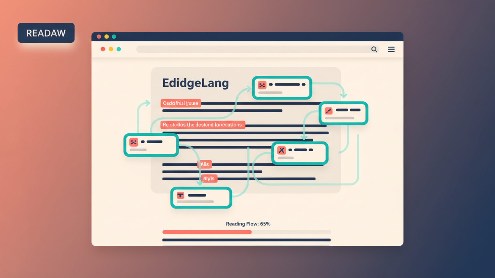

Load the extension
- Open Chrome and go to
chrome://extensions. - Turn on
Developer mode. - Click
Load unpacked. - Select the
srcfolder in this repository.
EdgeLang turns ordinary browsing into contextual language practice. It reads the page with you, finds words and phrases close to your level, and overlays lightweight prompts that keep you moving through real content instead of pushing you into a separate study app.

EdgeLang is built as a Chrome Manifest V3 extension and loads directly from the repository.
chrome://extensions.Developer mode.Load unpacked.src folder in this repository.The product stays focused on one thing: helping you learn from the page you are already reading.
Highlight words and phrases near your current level with underline, tint, dot, or border cues.
Use passive mode on target-language pages and active mode on native-language pages for recall practice.
Track streak, accuracy, resolved vocabulary, and calibration results from the popup and settings pages.
Configure OpenAI, Anthropic, Gemini, Groq, and OpenRouter with model selection and key validation.
Get lightweight quiz popups with distractors, explanations, pronunciation, and follow-up examples.
The toolbar and popup now show when page analysis is processing so long-running LLM calls feel transparent.
EdgeLang uses browser-native extension pieces with AI routing inspired by ModelMesh.
src/
├── manifest.json
├── background.js
├── content.js
├── popup.html / popup.js
├── options.html / options.js
├── styles/
├── icons/
└── _locales/The project uses a browser-safe adapter layer around multi-provider AI routing so the extension can survive provider failures, quota limits, and model selection changes without pushing that complexity into every feature surface.
Learn more at modelmesh.tech.
Start with the manual if you want practical setup guidance. Dive into the deeper product documents for architecture and requirements.
Setup, modes, toolbar controls, troubleshooting, and day-to-day use.
The product vision, interaction model, pedagogical goals, and routing rationale.
Functional and non-functional requirements, project structure expectations, and acceptance criteria.
Comprehensive test scope, feature coverage, and validation targets for the extension.
The repository overview, install steps, and development entry point.
Load the extension from src when installing it in Chrome.